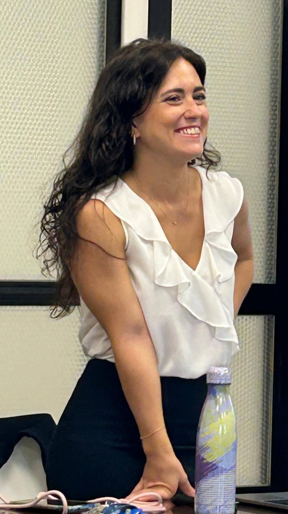

About me
I work on trustworthy AI and resilient data systems for people.
Since 2026 I have been a postdoctoral researcher at TU Wien, in Katja Hose's group. I work on TUInsight Reloaded, a two-year project on the university's central data platform, which brings together finance, personnel, research and teaching data. My side of it is the systems one: making the nightly data updates dependable so that nobody plans on stale figures, cutting response times for the queries people run every day, and adding monitoring and recovery so that failures surface instead of passing unnoticed. A colleague works on the natural-language access layer.
Before Vienna I spent five years at Politecnico di Milano. I worked on S-PIC4CHU, on semantics-based data preparation and provenance, and earlier on fault detection in industrial production lines and graph models for medical imaging data. With INAIL I worked on recognising dangerous situations in the workplace from sensor and text data, and at Bocconi on text and network analysis of international anti-corruption reports.
Alongside that runs a second line of work on fairness: how to balance satisfaction and diversity when a system recommends to a group over several rounds, and more recently how to evaluate LLM-based ranking when there is no ground truth to compare against. Six months at Tampere University with Konstantinos Stefanidis in 2024 started that collaboration, which continues.
I completed my PhD in Information Technology at Politecnico di Milano in 2025, supervised by Letizia Tanca, with a thesis on urban analysis frameworks from data modelling to sequential group recommendation. My master's and bachelor's degrees, both in Computer Science and Engineering, are from the same university.

News
The full list of publications is on Google Scholar.
Contact
emilia.lenzi7@gmail.com
Faculty of Informatics, TU Wien
Favoritenstraße 9–11, 1040 Vienna